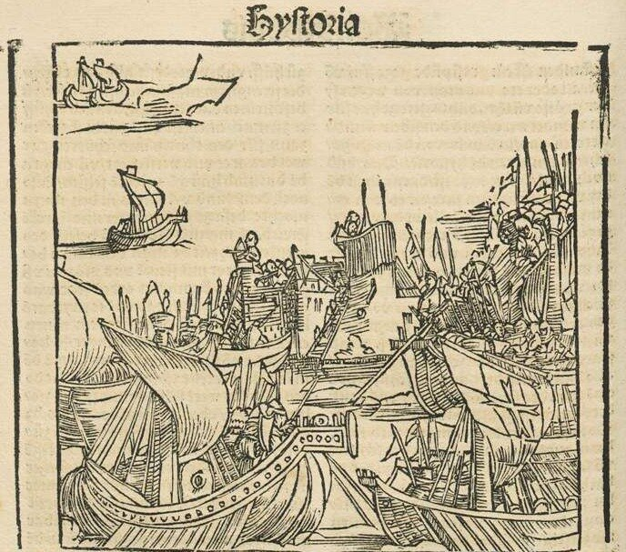
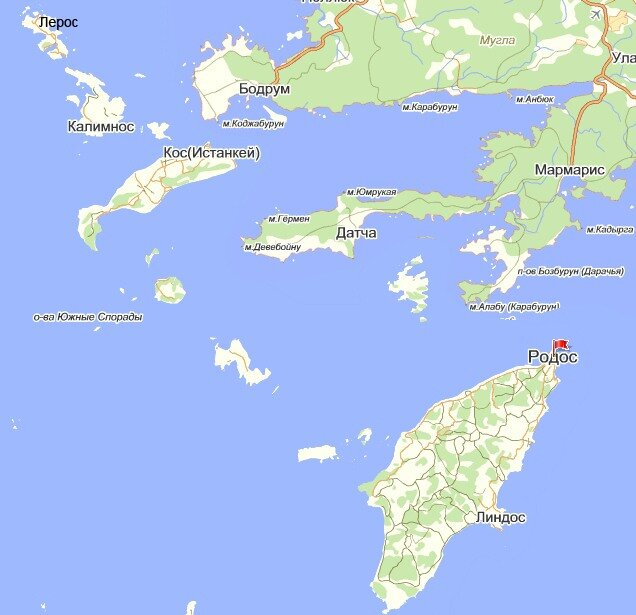

Захват Родоса выглядел как осуществление сложного плана, обеспечивающего маскировку истинных целей предприятия лозунгами крестоносного движения и борьбы против византийских раскольников. Формально Родос оставался владением Византии, но фактические его хозяева менялись довольно часто. В 1234 г. он стал протекторатом Венеции, однако венецианцы были оттуда выбиты в 1248 году генуэзцами. Купцы из Генуи стали там частыми гостями. Хотя Византия не отказывалась от своих прав на Родос, тем не менее верховную власть нередко передавала генуэзским адмиралам. С начала четырнадцатого века на отдельных частях острова хозяйничали турки, пользуясь создавшейся там неразберихой после землетрясения в 1303 году. Фактически, остров в этот период представлял собой интернациональную базу пиратов всего Средиземноморья.

В 1306 году Виньоло де Виньоли (Vignolo de' Vignoli), известный генуэзский корсар, объявил, что император Византии подарил ему северные додеканесские острова Кос и Лерос, а также феодальное поместье (casale) Лардос на Родосе. Однако на Кос претендовали венецианцы, которые высадились там в 1302 г., имея в виду дальнейшее продвижение на Родос. В рамках этого плана венецианских флот под командованием Корнаро захватил несколько островов между Родосом и Критом, ранее принадлежащих генуэзцам.
27 мая 1306 года глава госпитальеров бывший адмирал Фульк де Вилларе провел в Лимассоле тайную встречу с генуэзским адмиралом Виньоло де Виньоли, в которой участвовали также адмирал, маршал и главный хранитель ордена иоаннитов.
Сделаем небольшое отступление, чтобы отметить организационные изменения, которые произошли к этому времени в ордене святого Иоанна Иерусалимского.
Рыцари ордена не говорили по-латински, который был тогда уже языком межнационального общения, из-за чего между представителями разных стран в ордене возникали иногда трения. Рыцари-франкофоны говорили на трех диалектах: провансальском, окситанском (ланг д’ок) и северофранцузском (ланг д’ойль). Это были самые первые языки в ордене. (Это надо иметь в виду, когда мы читаем многочисленные книги об Ордене госпитальеров, переведенные в основном с английского языка: в этих книгах содержится очень много терминологических ошибок). На их основе сложились первые три подразделения ордена, которые назывались «языками» (« langues ») (несмотря на традицию, я буду называть эти подразделения «лангами», а не «языками»).: Ланг Прованса (la langue de Provence), Ланг Оверни (la langue d'Auvergne) и Ланг Франции (la langue de France.). В период пребывания на Кипре к ним добавились еще 4 подразделения: Ланг Италии (la langue d'Italie), Ланг Арагона (la langue d'Aragon), Ланг Англии (la langue d'Angleterre) и Ланг Германии (la langue d'Allemagne). Однородность этих «лангов» была относительной, Так, если испанцы и португальцы еще могли понимать друг друга в арагонском ланге, то полякам и другим славянам, которые относились к германскому лангу, сделать это было труднее. Между лангами существовала иерархия (как раз по старшинству они расположены в приведенном выше списке). Каждый ланг имел свое здание, или приют (оберж – « auberge »), в котором братия трапезничала и проводила свободное от службы время. Во главе обержа стоял байи (bailli), которого в ту пору чаще называли столп (пилье , pilier ). Он избирался всей братией ланга, как правило, из самых старых его членов. На каждого пилье возлагались, помимо забот о своем ланге, обязанности по управлению определенным делами всего ордена.
– Пилье Прованса носил титул «великого командора», или «великого учителя» (grand précepteur) и отвечал за финансы и обеспечение. Он заменял Великого Магистра во время его отсутствия или болезни. В военное время командовал артиллерией.
– Третье место в иерархии ордена занимал пилье Оверни, он же «Великий маршал», отвечающий за все военные вопросы ордена. На него возлагалось командование всеми военными отрядами иоаннитов во время кампании.
– На четвертом месте находился пилье Франции, который имел титул «Великого госпитальера», он отвечал за все госпитали ордена и связанную с ними работу.
– Пятый ранг был у представителя Италии, «Великого адмирала» ордена, высшего должностного лица, отвечавшего за военно-морские силы госпитальеров.
– У иерарха шестого ранга пилье Арагона был титул «Главного хранителя» (grand conservateur ), подпись его стояла на всех рабочих документах, в том числе и по выдаче жалованья членам ордена.
– Титул представителя Англии в этой иерархии назвался туркопольер (turcopolier). Туркополы или туркопольеры – это дети от смешанных греко-турецких браков, которые участвовали в боевых действиях крестоносцев. Из них в основном формировалась легкая кавалерия ордена. Командовал этой кавалерией как раз представитель Англии.
–Последним в иерархии был «Великий байи» (grand bailli), которым являлся глава ланга Германии. Он отвечал за проектирование и строительство фортификационных сооружений.
Итак, вернемся к секретной встрече двух адмиралов. После напряженных переговоров нотариусы заверили достигнутое соглашение:
Стороны обязуются совместными действиями захватить остров Родос и прилегающие острова. Виньоли обязуется передать свои права на острова Кос и Лерос госпитальерам, но сохраняет за собой Лардос и другие поместья по его усмотрению на Родосе. На других островах госпитальеры получают две части, а Виньоли одну часть от ренты и доходов, причем сборщики этих налогов назначаются по обоюдному согласию. Юридические права и правосудие на всех островах, кроме Родоса, принадлежат Виньоли, на Родосе – магистру; в отношении самих госпитальеров юрисдикция принадлежит магистру вне зависимости от места их нахождения.
23 июня 1306 г. Вилларе покидает Лимассол во главе отряда из 35 рыцарей-иоаннитов, шести левантийских всадников и 500 пехотинцев. Корабли (две галеры и четыре меньших судна) для доставки их на Родос предоставил Виньоли. Это был, видимо, последний случай, когда госпитальеры начинали военную кампанию без своего флота. В том же 1306 году папа Климент V дал разрешение ордену на создание собственного военного флота. Именно от этого события начинается история флота Мальтийского ордена, о которой нам еще предстоит поговорить.
На полное завоевание Родоса потребовалось несколько лет и мобилизация всех материальных и людских ресурсов. Точной хронологии захвата Родоса до нас не дошло. Определенно известно, что 5 сентября 1307 года папа подтвердил право госпитальеров на владение Родосом, хотя сопротивление греков и турок на отдельных направлениях еще продолжалось. Но это сопротивление не носило уже организованного характера, что дало возможность госпитальерам направить часть сил на защиту Кипра и Киликийской Армении, а также совершать вылазки против Византии.
Захват Родоса не являлся частью общего крестового похода, passagium generale, он был частной целью Великого Магистра. Однако проводился он с одобрения и при поддержке папы, который в ноябре 1309 года жаловался, что этот частный passagium опустошил его казну и он надеется, что захват Родоса станет прелюдией к более широкой кампании христиан на Востоке.
Продолжим позже.